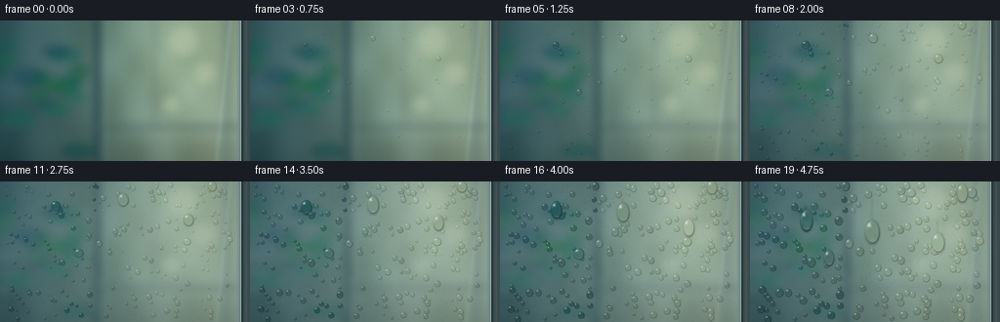
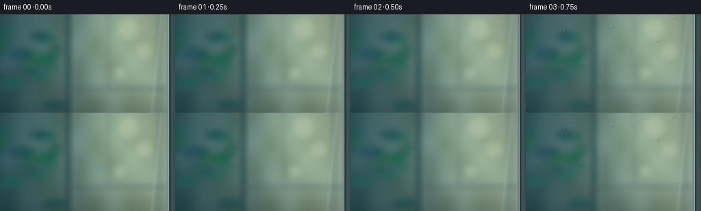

CODING AGENTS AS PIXEL WORLD MODELS
traex/GPT-6.1-Sol · phygen_101
点击播放 · 原生 RGB 像素
逐轮保存的候选
回放视频、检查图与代码变化。
每份候选均可单独播放。实际图片检查记录在下方工具轨迹中。
候选 01播放与检查图
点击播放 · 原生 RGB 像素


展开代码变化
--- 上一保存版本
+++ 本次保存版本
@@ -0,0 +1,200 @@
+"""Text-only procedural timelapse of condensation on a chilled window pane."""
+from pathlib import Path
+import json
+import numpy as np
+from PIL import Image, ImageDraw, ImageFilter
+from artifact_io import save
+
+ROOT = Path(__file__).resolve().parent
+SPEC = json.loads((ROOT/'task_spec.json').read_text())
+W,H = SPEC['width'], SPEC['height']
+S=3
+WW,HH=W*S,H*S
+rng=np.random.default_rng(1017)
+yy,xx=np.mgrid[0:HH,0:WW].astype(float)/S
+
+def soft_noise(scale, seed):
+ gen=np.random.default_rng(seed)
+ a=gen.uniform(0,255,(max(2,H//scale),max(2,W//scale))).astype(np.uint8)
+ return np.asarray(Image.fromarray(a).resize((WW,HH),Image.Resampling.BICUBIC),float)/255
+
+# The out-of-focus room is seen through a stationary sheet of cold glass.
+base=np.zeros((HH,WW,3),float)
+c1=np.array([46,74,68]); c2=np.array([153,149,114])
+mix=np.clip(xx/240,0,1)[...,None]
+base=c1*(1-mix)+c2*mix
+light=np.exp(-((xx-182)/74)**2-((yy-38)/98)**2)
+base+=light[...,None]*np.array([42,38,20])
+base-=np.maximum(yy-106,0)[...,None]*np.array([.4,.45,.43])
+base+=(soft_noise(25,89)-.5)[...,None]*24
+im=Image.fromarray(np.uint8(np.clip(base,0,255)))
+d=ImageDraw.Draw(im,'RGBA')
+def rect(box,fill): d.rectangle(tuple(int(v*S) for v in box), fill=fill)
+def ellipse(box,fill): d.ellipse(tuple(int(v*S) for v in box),fill=fill)
+# Broad indistinct plant foliage, window mullions, and a warm distant wall.
+rect((96,-5,103,146),(34,57,56,180))
+rect((106,0,109,143),(205,204,169,50))
+rect((-5,106,246,111),(73,84,73,100))
+rect((156,-5,160,108),(98,102,84,72))
+rect((228,-10,237,149),(81,100,94,75))
+for i in range(24):
+ x=rng.uniform(-18,88); y=rng.uniform(22,158)
+ rx=rng.uniform(7,18); ry=rng.uniform(4,11)
+ ellipse((x-rx,y-ry,x+rx,y+ry),(20,int(rng.uniform(60,102)),int(rng.uniform(41,71)),130))
+for x,y,r in [(187,21,15),(210,54,11),(175,86,8)]:
+ ellipse((x-r,y-r,x+r,y+r),(236,212,156,100))
+background=np.asarray(im.filter(ImageFilter.GaussianBlur(4.0*S)),float)
+sharp=np.asarray(im.filter(ImageFilter.GaussianBlur(1.0*S)),float)
+# The cold glass has a blue tint, broad low-contrast reflections and a bevel.
+background=background*np.array([.84,.96,1.06])+np.array([6,11,16])
+sharp=sharp*np.array([.84,.96,1.06])+np.array([6,11,16])
+reflection=np.exp(-((xx-31+yy*.27)/18)**2)*8+np.exp(-((xx-236+yy*.10)/2.5)**2)*12
+background+=reflection[...,None]*np.array([.7,.9,1.0])
+sharp+=reflection[...,None]*np.array([.7,.9,1.0])
+cloud=(.45+.38*soft_noise(31,44)+.17*soft_noise(9,48))
+# Tiny stationary nucleation sites and larger beads share one cold surface.
+fine=[]
+for i in range(1400):
+ fine.append((rng.uniform(3,241),rng.uniform(1,144),rng.uniform(.08,.83),rng.uniform(.12,.60),rng.uniform(.86,1.14)))
+drops=[]
+for i in range(240):
+ drops.append(dict(x=rng.uniform(5,237),y=rng.uniform(2,141),r=.16,
+ onset=rng.uniform(.015,.57),growth=rng.uniform(4,18),active=False,alive=True,
+ stretch=rng.uniform(.94,1.19), mobile=False,vy=0,trail=[]))
+# These few faster-growing beads will become gravity-driven rivulets.
+for x,y,g in [(57,25,64),(126,18,74),(193,39,68),(217,5,53),(81,73,50)]:
+ drops.append(dict(x=x,y=y,r=.25,onset=.055,growth=g,active=False,alive=True,
+ stretch=1.06,mobile=True,vy=0,trail=[]))
+
+# Draw transparent convex beads with lens refraction, contact shadows and soft
+# window-light highlights. All calculations are geometric, not model based.
+def bead(canvas,x,y,r,stretch=1.0,speed=0,small=False):
+ if r<.10:return
+ ry=r*stretch*(1+min(.35,speed*.009))
+ rx=r*(1-min(.10,speed*.002))
+ x0=max(0,int((x-rx-1.1)*S)); x1=min(243*S,int((x+rx+1.1)*S)+1)
+ y0=max(0,int((y-ry-1.1)*S)); y1=min(HH,int((y+ry+1.1)*S)+1)
+ if x1<=x0 or y1<=y0:return
+ gy,gx=np.mgrid[y0:y1,x0:x1].astype(float)
+ u=(gx/S-x)/rx; v=(gy/S-y)/ry
+ # Slightly heavier lower half (contact-angle profile of a hanging drop).
+ u=u/(1+.055*v)
+ rho=np.sqrt(u*u+v*v)
+ mask=np.clip((1-rho)*max(rx*S,1)+.5,0,1)
+ patch=canvas[y0:y1,x0:x1]
+ shadow=np.exp(-((rho-1.035)/(.08+.10/max(r,1)))**2)*.15
+ shadow*=np.clip(.55+.30*v+.22*u,0,1)
+ patch*=1-shadow[...,None]
+ if small:
+ lightspot=np.exp(-((u+.31)**2+(v+.43)**2)/.13)
+ dark=np.exp(-((rho-.88)/.22)**2)*(.5+.3*v+.15*u)
+ col=patch*(1-.27*dark[...,None])+lightspot[...,None]*50
+ else:
+ depth=np.sqrt(np.maximum(0,1-rho*rho))
+ # Refracted background, a magnified local image with edge deflection.
+ sx=np.clip((x+u*rx*.36-u*(1-depth)*rx*1.4+1.4*r)*S,0,WW-1).astype(int)
+ sy=np.clip((y+v*ry*.36-v*(1-depth)*ry*1.4+.4*r)*S,0,HH-1).astype(int)
+ refract=sharp[sy,sx]
+ col=.84*refract+.16*patch
+ rim=np.exp(-((rho-.90)/.065)**2)
+ col*=1-(rim*(.21+.16*v+.12*u))[...,None]
+ # Cool reflected window in the upper left shoulder of every bead.
+ glint=np.exp(-((u+.38)/.21)**2-((v+.52)/.135)**2)
+ arc=np.exp(-((rho-.80)/.055)**2)*np.exp(-((u+.50)**2+(v+.62)**2)/.22)
+ a=np.clip(glint*.70+arc*.45,0,.85)
+ col=col*(1-a[...,None])+np.array([237,248,246])*a[...,None]
+ # A faint light caustic under the lower edge.
+ lower=np.exp(-((u-.13)/.47)**2-((v-.69)/.105)**2)*.16
+ col=col*(1-lower[...,None])+np.array([185,205,181])*lower[...,None]
+ patch[:]=patch*(1-mask[...,None])+col*mask[...,None]
+
+frames=[]
+last=0
+for index in range(SPEC['frames']):
+ t=index/(SPEC['frames']-1)
+ # Condensation accumulates in accelerated time without any falling spray.
+ steps=8
+ dt=(t-last)/steps if index else 0
+ for sub in range(steps):
+ ts=last+dt*(sub+1)
+ for q in drops:
+ if not q['alive'] or ts<q['onset']:continue
+ q['active']=True
+ q['r']=np.sqrt(q['r']**2+q['growth']*dt*(.63+.8*ts))
+ if q['r']>5.15:
+ q['vy']=min(122,q['vy']+dt*145*(q['r']-4.65))
+ if q['vy']>0:
+ oldy=q['y']
+ q['y']+=q['vy']*dt
+ q['x']+=.32*np.sin(q['y']*.16)*dt
+ if q['y']-oldy>.035:q['trail'].append((q['x'],oldy,q['r']*.24,ts))
+ # A little liquid is left behind; a descending bead cannot grow
+ # without limit as it deposits the wet track.
+ q['r']=max(4.4,q['r']-dt*q['vy']*.013)
+ # Contacting beads coalesce by conserving their volume.
+ for a in range(len(drops)):
+ p=drops[a]
+ if not p['alive'] or not p['active']:continue
+ for b in range(a+1,len(drops)):
+ q=drops[b]
+ if not q['alive'] or not q['active']:continue
+ if abs(p['x']-q['x'])>p['r']+q['r'] or abs(p['y']-q['y'])>p['r']+q['r']:continue
+ dist=np.hypot(p['x']-q['x'],p['y']-q['y'])
+ if dist<(p['r']+q['r'])*.72:
+ vp=p['r']**3; vq=q['r']**3
+ p['x']=(p['x']*vp+q['x']*vq)/(vp+vq)
+ p['y']=(p['y']*vp+q['y']*vq)/(vp+vq)
+ p['r']=(vp+vq)**(1/3)
+ p['growth']+=q['growth']*.40
+ p['vy']=max(p['vy'],q['vy'])
+ p['trail']+=q['trail'];q['alive']=False
+ last=t
+ fog=np.clip((t-.025)*.70,0,.47)*cloud
+ # Mist is a thin translucency, not an opaque layer of frost.
+ fogcol=np.stack([119+light*47,147+light*37,150+light*29],axis=-1)
+ canvas=background*(1-fog[...,None])+fogcol*fog[...,None]
+ grain=(soft_noise(2,731)-.5)*1.2
+ canvas+=grain[...,None]
+ # Clear narrow wet tracks remain where the largest beads have slid.
+ track=np.zeros((HH,WW),float)
+ for q in drops:
+ if len(q['trail'])<2:continue
+ trailim=Image.new('L',(WW,HH),0); td=ImageDraw.Draw(trailim)
+ coords=[(int(x*S),int(y*S)) for x,y,r,tt in q['trail']]
+ width=max(2,int(q['r']*.42*S))
+ td.line(coords,fill=190,width=width)
+ arr=np.asarray(trailim.filter(ImageFilter.GaussianBlur(.45*S)),float)/255
+ track=np.maximum(track,arr)
+ canvas=canvas*(1-track[...,None]*.75)+background*track[...,None]*.75
+ # Subtle two-sided streak edges catch the reflected window.
+ edge=(np.roll(track,2,axis=1)-np.roll(track,-2,axis=1))
+ canvas+=edge[...,None]*np.array([5,8,9])
+ for x,y,begin,final,stretch in fine:
+ p=np.clip((t-begin)/.43,0,1)
+ if p<=0:continue
+ # Passing water collects microscopic beads instead of crossing them.
+ if track[min(HH-1,int(y*S)),min(WW-1,int(x*S))]>.2:continue
+ bead(canvas,x,y,final*np.sqrt(p),stretch,small=True)
+ for q in sorted(drops,key=lambda q:q['r']):
+ if q['alive'] and q['active']:
+ bead(canvas,q['x'],q['y'],q['r'],q['stretch'],q['vy'])
+ # Physical edge of the glass: a narrow bevel and brushed metal frame.
+ for x in range(243*S,WW):
+ xpos=x/S
+ if xpos<246:
+ c=np.array([111,139,142])+np.sin((xpos-243)*1.8)*22
+ canvas[:,x]=.32*canvas[:,x]+.68*c
+ elif xpos<247:
+ canvas[:,x]=[178,199,195]
+ elif xpos<249:
+ canvas[:,x]=[39,58,60]
+ else:
+ c=np.array([61,78,80])+np.exp(-((xpos-252)/1.0)**2)*13
+ canvas[:,x]=c+(yy[:,x,None]/144)*4
+ # Soft camera vignette and high-quality pixel downsampling.
+ vignette=1-.13*((xx-132)/175)**2-.075*((yy-62)/115)**2
+ canvas*=vignette[...,None]
+ out=Image.fromarray(np.uint8(np.clip(canvas,0,255))).resize((W,H),Image.Resampling.LANCZOS)
+ frames.append(np.asarray(out))
+save(np.stack(frames),ROOT)
+print('Saved',len(frames),'RGB frames.')
可观测工具轨迹
实际执行的命令与返回图片。
命令 1exit 0
/bin/bash -lc "ls -la && cat prompt.txt && printf '\\n---RULES---\\n' && cat GENERATION_RULES.md && printf '\\n---SPEC---\\n' && cat task_spec.json"
命令 2exit 0
/bin/bash -lc "cat artifact_io.py && python - <<'PY'
import numpy,PIL
print('available')
PY"命令 3exit 0
/bin/bash -lc "cat > generate.py <<'PY'
\"\"\"Text-only procedural timelapse of condensation on a chilled window pane.\"\"\"
from pathlib import Path
import json
import numpy as np
from PIL import Image, ImageDraw, ImageFilter
from artifact_io import save
ROOT = Path(__file__).resolve().parent
SPEC = json.loads((ROOT/'task_spec.json').read_text())
W,H = SPEC['width'], SPEC['height']
S=3
WW,HH=W*S,H*S
rng=np.random.default_rng(1017)
yy,xx=np.mgrid[0:HH,0:WW].astype(float)/S
def soft_noise(scale, seed):
gen=np.random.default_rng(seed)
a=gen.uniform(0,255,(max(2,H//scale),max(2,W//scale))).astype(np.uint8)
return np.asarray(Image.fromarray(a).resize((WW,HH),Image.Resampling.BICUBIC),float)/255
# The out-of-focus room is seen through a stationary sheet of cold glass.
base=np.zeros((HH,WW,3),float)
c1=np.array([46,74,68]); c2=np.array([153,149,114])
mix=np.clip(xx/240,0,1)[...,None]
base=c1*(1-mix)+c2*mix
light=np.exp(-((xx-182)/74)**2-((yy-38)/98)**2)
base+=light[...,None]*np.array([42,38,20])
base-=np.maximum(yy-106,0)[...,None]*np.array([.4,.45,.43])
base+=(soft_noise(25,89)-.5)[...,None]*24
im=Image.fromarray(np.uint8(np.clip(base,0,255)))
d=ImageDraw.Draw(im,'RGBA')
def rect(box,fill): d.rectangle(tuple(int(v*S) for v in box), fill=fill)
def ellipse(box,fill): d.ellipse(tuple(int(v*S) for v in box),fill=fill)
# Broad indistinct plant foliage, window mullions, and a warm distant wall.
rect((96,-5,103,146),(34,57,56,180))
rect((106,0,109,143),(205,204,169,50))
rect((-5,106,246,111),(73,84,73,100))
rect((156,-5,160,108),(98,102,84,72))
rect((228,-10,237,149),(81,100,94,75))
for i in range(24):
x=rng.uniform(-18,88); y=rng.uniform(22,158)
rx=rng.uniform(7,18); ry=rng.uniform(4,11)
ellipse((x-rx,y-ry,x+rx,y+ry),(20,int(rng.uniform(60,102)),int(rng.uniform(41,71)),130))
for x,y,r in [(187,21,15),(210,54,11),(175,86,8)]:
ellipse((x-r,y-r,x+r,y+r),(236,212,156,100))
background=np.asarray(im.filter(ImageFilter.GaussianBlur(4.0*S)),float)
sharp=np.asarray(im.filter(ImageFilter.GaussianBlur(1.0*S)),float)
# The cold glass has a blue tint, broad low-contrast reflections and a bevel.
background=background*np.array([.84,.96,1.06])+np.array([6,11,16])
sharp=sharp*np.array([.84,.96,1.06])+np.array([6,11,16])
reflection=np.exp(-((xx-31+yy*.27)/18)**2)*8+np.exp(-((xx-236+yy*.10)/2.5)**2)*12
background+=reflection[...,None]*np.array([.7,.9,1.0])
sharp+=reflection[...,None]*np.array([.7,.9,1.0])
cloud=(.45+.38*soft_noise(31,44)+.17*soft_noise(9,48))
# Tiny stationary nucleation sites and larger beads share one cold surface.
fine=[]
for i in range(1400):
fine.append((rng.uniform(3,241),rng.uniform(1,144),rng.uniform(.08,.83),rng.uniform(.12,.60),rng.uniform(.86,1.14)))
drops=[]
for i in range(240):
drops.append(dict(x=rng.uniform(5,237),y=rng.uniform(2,141),r=.16,
onset=rng.uniform(.015,.57),growth=rng.uniform(4,18),active=False,alive=True,
stretch=rng.uniform(.94,1.19), mobile=False,vy=0,trail=[]))
# These few faster-growing beads will become gravity-driven rivulets.
for x,y,g in [(57,25,64),(126,18,74),(193,39,68),(217,5,53),(81,73,50)]:
drops.append(dict(x=x,y=y,r=.25,onset=.055,growth=g,active=False,alive=True,
stretch=1.06,mobile=True,vy=0,trail=[]))
# Draw transparent convex beads with lens refraction, contact shadows and soft
# window-light highlights. All calculations are geometric, not model based.
def bead(canvas,x,y,r,stretch=1.0,speed=0,small=False):
if r<.10:return
ry=r*stretch*(1+min(.35,speed*.009))
rx=r*(1-min(.10,speed*.002))
x0=max(0,int((x-rx-1.1)*S)); x1=min(243*S,int((x+rx+1.1)*S)+1)
y0=max(0,int((y-ry-1.1)*S)); y1=min(HH,int((y+ry+1.1)*S)+1)
if x1<=x0 or y1<=y0:return
gy,gx=np.mgrid[y0:y1,x0:x1].astype(float)
u=(gx/S-x)/rx; v=(gy/S-y)/ry
# Slightly heavier lower half (contact-angle profile of a hanging drop).
u=u/(1+.055*v)
rho=np.sqrt(u*u+v*v)
mask=np.clip((1-rho)*max(rx*S,1)+.5,0,1)
patch=canvas[y0:y1,x0:x1]
shadow=np.exp(-((rho-1.035)/(.08+.10/max(r,1)))**2)*.15
shadow*=np.clip(.55+.30*v+.22*u,0,1)
patch*=1-shadow[...,None]
if small:
lightspot=np.exp(-((u+.31)**2+(v+.43)**2)/.13)
dark=np.exp(-((rho-.88)/.22)**2)*(.5+.3*v+.15*u)
col=patch*(1-.27*dark[...,None])+lightspot[...,None]*50
else:
depth=np.sqrt(np.maximum(0,1-rho*rho))
# Refracted background, a magnified local image with edge deflection.
sx=np.clip((x+u*rx*.36-u*(1-depth)*rx*1.4+1.4*r)*S,0,WW-1).astype(int)
sy=np.clip((y+v*ry*.36-v*(1-depth)*ry*1.4+.4*r)*S,0,HH-1).astype(int)
refract=sharp[sy,sx]
col=.84*refract+.16*patch
rim=np.exp(-((rho-.90)/.065)**2)
col*=1-(rim*(.21+.16*v+.12*u))[...,None]
# Cool reflected window in the upper left shoulder of every bead.
glint=np.exp(-((u+.38)/.21)**2-((v+.52)/.135)**2)
arc=np.exp(-((rho-.80)/.055)**2)*np.exp(-((u+.50)**2+(v+.62)**2)/.22)
a=np.clip(glint*.70+arc*.45,0,.85)
col=col*(1-a[...,None])+np.array([237,248,246])*a[...,None]
# A faint light caustic under the lower edge.
lower=np.exp(-((u-.13)/.47)**2-((v-.69)/.105)**2)*.16
col=col*(1-lower[...,None])+np.array([185,205,181])*lower[...,None]
patch[:]=patch*(1-mask[...,None])+col*mask[...,None]
frames=[]
last=0
for index in range(SPEC['frames']):
t=index/(SPEC['frames']-1)
# Condensation accumulates in accelerated time without any falling spray.
steps=8
dt=(t-last)/steps if index else 0
for sub in range(steps):
ts=last+dt*(sub+1)
for q in drops:
if not q['alive'] or ts<q['onset']:continue
q['active']=True
q['r']=np.sqrt(q['r']**2+q['growth']*dt*(.63+.8*ts))
if q['r']>5.15:
q['vy']=min(122,q['vy']+dt*145*(q['r']-4.65))
if q['vy']>0:
oldy=q['y']
q['y']+=q['vy']*dt
q['x']+=.32*np.sin(q['y']*.16)*dt
if q['y']-oldy>.035:q['trail'].append((q['x'],oldy,q['r']*.24,ts))
# A little liquid is left behind; a descending bead cannot grow
# without limit as it deposits the wet track.
q['r']=max(4.4,q['r']-dt*q['vy']*.013)
# Contacting beads coalesce by conserving their volume.
for a in range(len(drops)):
p=drops[a]
if not p['alive'] or not p['active']:continue
for b in range(a+1,len(drops)):
q=drops[b]
if not q['alive'] or not q['active']:continue
if abs(p['x']-q['x'])>p['r']+q['r'] or abs(p['y']-q['y'])>p['r']+q['r']:continue
dist=np.hypot(p['x']-q['x'],p['y']-q['y'])
if dist<(p['r']+q['r'])*.72:
vp=p['r']**3; vq=q['r']**3
p['x']=(p['x']*vp+q['x']*vq)/(vp+vq)
p['y']=(p['y']*vp+q['y']*vq)/(vp+vq)
p['r']=(vp+vq)**(1/3)
p['growth']+=q['growth']*.40
p['vy']=max(p['vy'],q['vy'])
p['trail']+=q['trail'];q['alive']=False
last=t
fog=np.clip((t-.025)*.70,0,.47)*cloud
# Mist is a thin translucency, not an opaque layer of frost.
fogcol=np.stack([119+light*47,147+light*37,150+light*29],axis=-1)
canvas=background*(1-fog[...,None])+fogcol*fog[...,None]
grain=(soft_noise(2,731)-.5)*1.2
canvas+=grain[...,None]
# Clear narrow wet tracks remain where the largest beads have slid.
track=np.zeros((HH,WW),float)
for q in drops:
if len(q['trail'])<2:continue
trailim=Image.new('L',(WW,HH),0); td=ImageDraw.Draw(trailim)
coords=[(int(x*S),int(y*S)) for x,y,r,tt in q['trail']]
width=max(2,int(q['r']*.42*S))
td.line(coords,fill=190,width=width)
arr=np.asarray(trailim.filter(ImageFilter.GaussianBlur(.45*S)),float)/255
track=np.maximum(track,arr)
canvas=canvas*(1-track[...,None]*.75)+background*track[...,None]*.75
# Subtle two-sided streak edges catch the reflected window.
edge=(np.roll(track,2,axis=1)-np.roll(track,-2,axis=1))
canvas+=edge[...,None]*np.array([5,8,9])
for x,y,begin,final,stretch in fine:
p=np.clip((t-begin)/.43,0,1)
if p<=0:continue
# Passing water collects microscopic beads instead of crossing them.
if track[min(HH-1,int(y*S)),min(WW-1,int(x*S))]>.2:continue
bead(canvas,x,y,final*np.sqrt(p),stretch,small=True)
for q in sorted(drops,key=lambda q:q['r']):
if q['alive'] and q['active']:
bead(canvas,q['x'],q['y'],q['r'],q['stretch'],q['vy'])
# Physical edge of the glass: a narrow bevel and brushed metal frame.
for x in range(243*S,WW):
xpos=x/S
if xpos<246:
c=np.array([111,139,142])+np.sin((xpos-243)*1.8)*22
canvas[:,x]=.32*canvas[:,x]+.68*c
elif xpos<247:
canvas[:,x]=[178,199,195]
elif xpos<249:
canvas[:,x]=[39,58,60]
else:
c=np.array([61,78,80])+np.exp(-((xpos-252)/1.0)**2)*13
canvas[:,x]=c+(yy[:,x,None]/144)*4
# Soft camera vignette and high-quality pixel downsampling.
vignette=1-.13*((xx-132)/175)**2-.075*((yy-62)/115)**2
canvas*=vignette[...,None]
out=Image.fromarray(np.uint8(np.clip(canvas,0,255))).resize((W,H),Image.Resampling.LANCZOS)
frames.append(np.asarray(out))
save(np.stack(frames),ROOT)
print('Saved',len(frames),'RGB frames.')
PY
python generate.py"命令 4exit 0
/bin/bash -lc "command -v ffmpeg || true; ls -lh pixels.npz index.html generate.py; python - <<'PY'
import numpy as np
from pathlib import Path
from PIL import Image
arr=np.stack([np.array(Image.open(p)) for p in sorted(Path('frames').glob('*.png'))])
print('Validated:',arr.shape,arr.dtype)
PY"视觉工具实际返回图片 1

保存候选 1 份；完成命令 4 次；可验证图片返回 1 张。原始 API 响应与完整日志保留在本地。